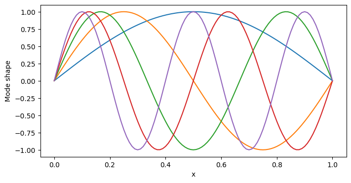
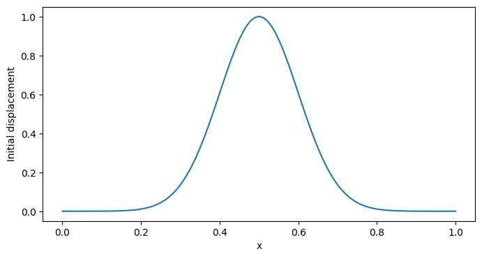
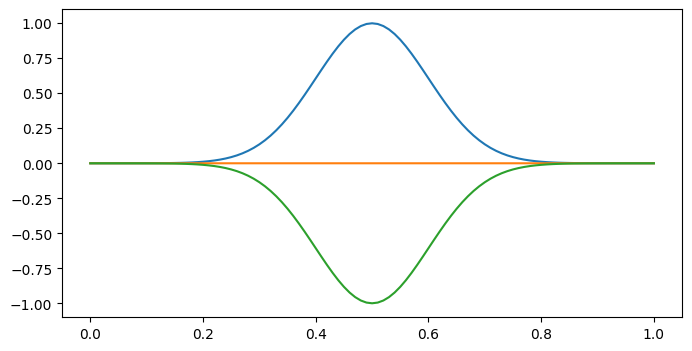
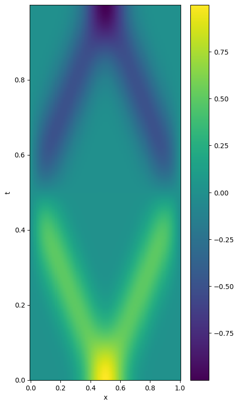
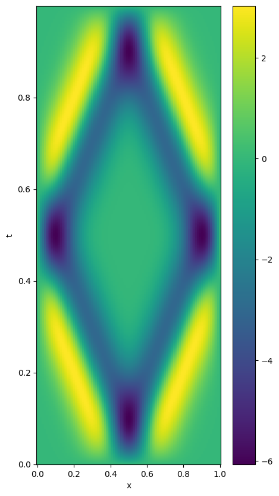

import matplotlib.pyplot as pltModal Solver
A solver for the 1D wave equation based on the modal decomposition
This is a solver based on the analytic modal decomposition for a 1D wave equation. The wave equation is given by: \[\frac{\partial^2 u}{\partial t^2} = c^2 \frac{\partial^2 u}{\partial x^2}\]
Solving this equation using separation of variables, we use the following ansatz \[u(x,t) = X(x)T(t)\] which leads to the following equation: \[\frac{1}{c^2}\frac{1}{T(t)}\frac{d^{2} T }{dt^{2}} = \frac{1}{X(x)}\frac{d^{2} X}{dx^{2}} = -k^{2}\] where \(k\) is a constant
\[\frac{1}{T(t)}\frac{d^{2} T }{dt^{2}} = -c^{2}k^{2} \equiv - \omega^{2}\]
The solutions are therefore \[X(x) = C\cos(kx) + D\sin(kx)\] \[T(t) = E\cos(\omega t) + F\sin(\omega t)\]
Using the boundary conditions, we can get an expression for the allowed values of \(k\)
Dirichlet on both ends
\[u(0,t) = u(L,t) = 0\] \[X(0) = X(L) = 0\] \[C = 0\] \[k = \frac{n\pi}{L}\] with n = 1,2,3,… And the eigenmodes are \[X_{n}(x) = D_{n}\sin(k_{n}x)\] The complete solution then is \[u(x,t) = \sum_{n=1}^{\infty} D_{n}\sin(k_{n}x)\left(E_{n}\cos(\omega_{n}t) + F_{n}\sin(\omega_{n}t)\right)\] Using \(A_{n} = D_{n}E_{n}\) and \(B_{n} = D_{n}F_{n}\), we get \[u(x,t) = \sum_{n=1}^{\infty} \sin(k_{n}x) \left(A_{n}\cos(\omega_{n}t) + B_{n}\sin(\omega_{n}t)\right)\] The derivative, \(v(x,t) = \frac{\partial u}{\partial t}\), is given by \[v(x,t) = \sum_{n=1}^{\infty} \sin(k_{n}x) \left(-A_{n}\omega_{n}\sin(\omega_{n}t) + B_{n}\omega_{n}\cos(\omega_{n}t)\right)\]
To determine the coefficients \(A_{n}\) and \(B_{n}\), we use the initial conditions \[u(x,0) = f(x)\] \[\frac{\partial u}{\partial t}(x,0) = g(x)\] which gives \[f(x) = \sum_{n=1}^{\infty} A_{n}\sin(k_{n}x)\] \[g(x) = \sum_{n=1}^{\infty} B_{n}\omega_{n}\sin(k_{n}x)\]
As \(k_{n}=n\pi/L\), we can see that summations correspond to a Fourier sine series expansion of \(f(x)\) and \(g(x)\). This assumes that \(f(x)\) and \(g(x)\) are odd functions, which is the case for the initial conditions, if we consider a periodic extension of the initial conditions, with period \(2L\). The initial conditions need to fulfill the boundary conditions, which means that \(f(0)=f(L)=0\) and, consequently \(g(0)=g(L)=0\). This is the case for odd functions, and therefore we can use the Fourier sine series expansion.
Then the coefficients are given by \[A_{n} = \frac{2}{L}\int_{0}^{L} f(x)\sin(k_{n}x) dx\] \[B_{n} = \frac{2}{L\omega_{n}}\int_{0}^{L} g(x)\sin(k_{n}x) dx\]
Neumann on both ends
\[\frac{\partial u}{\partial x}(0,t) = \frac{\partial u}{\partial x}(L,t) = 0\] \[\frac{dX}{dx}(0) = \frac{dX}{dx}(L) = 0\] \[D = 0\] \[k = \frac{n\pi}{L}\] with n = 0,1,2,3,… And the eigenmodes are \[X_{n}(x) = C_{n}\cos(k_{n}x)\]
The difference between the Dirichlet and Neumann boundary conditions is the allowed values of n, and the form of the eigenfunctions, but the wavenumbers and modal frequencies are the same (except the existence of the zero frequency mode for the Neumann boundary conditions). For n=0, the solution \(u(x,t)\) is a constant, corresponding to the zero frequency mode. This is the rigid motion of the string, or air column, or whatever is being modeled.
The complete solution then is \[u(x,t) = \sum_{n=0}^{\infty} C_{n}\cos(k_{n}x)\left(E_{n}\cos(\omega_{n}t) + F_{n}\sin(\omega_{n}t)\right)\] Using \(A_{n} = C_{n}E_{n}\) and \(B_{n} = C_{n}F_{n}\), we get \[u(x,t) = \sum_{n=0}^{\infty} \cos(k_{n}x) \left(A_{n}\cos(\omega_{n}t) + B_{n}\sin(\omega_{n}t)\right)\]
To determine the coefficients \(A_{n}\) and \(B_{n}\), we use the initial conditions \[u(x,0) = f(x)\] \[\frac{\partial u}{\partial t}(x,0) = g(x)\] which can be expressed as cosine series \[f(x) = \frac{A_{0}}{2} + \sum_{n=1}^{\infty} A_{n}\cos(k_{n}x)\] \[g(x) = \frac{B_{0}}{2} + \sum_{n=1}^{\infty} B_{n}\omega_{n}\cos(k_{n}x)\]
Note on initial velocity
As \(k_{n}=n\pi/L\), we can see that summations correspond to a Fourier cosine series expansion of \(f(x)\) and \(g(x)\). This assumes that \(f(x)\) and \(g(x)\) are even functions, which is the case for initial conditions that also fulfil the boundary conditions, \(\frac{\partial u}{\partial x}(0,t) = \frac{\partial u}{\partial x}(L,t) = 0\) , if we consider a periodic extension of the initial conditions \([-L,L]\), with period \(2L\). The initial velocity definitily needs to be even, as its derivative has to be 0 for x=0
Dirichlet on one end, Neumann on the other
\[u(0,t) = 0\] \[\frac{\partial u}{\partial x}(L,t) = 0\] \[C = 0\] \[k = \frac{(n-\frac{1}{2})\pi}{L}\] with n = 1,2,3,…
\[(u_{n+1} -2u_{n} +u_{n-1})/k^2 = c^2 Dxx u_n\]
Wave1dSolverModal
Wave1dSolverModal (sampling_rate:int=48000, final_time:float=1.0, n_gridpoints:int=101, length:float=1, wave_speed:float=1, boundary_conditions:str='dirichlet_dirichlet', n_max_modes:int=50)
Initialize self. See help(type(self)) for accurate signature.
| Type | Default | Details | |
|---|---|---|---|
| sampling_rate | int | 48000 | sampling rate, Hz (default: 48000) |
| final_time | float | 1.0 | final time of the simulation, seconds (default: 1) |
| n_gridpoints | int | 101 | number of grid points (default: 101) |
| length | float | 1 | length of the domain, meters (default: 1) |
| wave_speed | float | 1 | wave speed, meters/second (default: 1) |
| boundary_conditions | str | dirichlet_dirichlet | boundary conditions, either “dirichlet_dirichlet”, “neumann_neumann”, “dirichlet_neumann” (default: “dirichlet_dirichlet”) |
| n_max_modes | int | 50 | number of eigenmodes to calculate (default: 50) |
| Returns | None |
# Test that the solver class is working
solver = Wave1dSolverModal(
final_time=1,
length=1,
wave_speed=1,
boundary_conditions="dirichlet_dirichlet",
)
print(2 * jnp.pi / solver.wavenumbers)
# plot the first 5 mode shapes
plt.figure(figsize=(8, 4))
plt.plot(solver.grid, solver.modes[:5, :].T) # plot the first 5 mode shapes
plt.xlabel("x")
plt.ylabel("Mode shape")
plt.show()
print(solver.timesteps.shape)
print(solver.timesteps[-1])
# print the types for the solver attributes
print(type(solver.grid))
print(type(float(solver.timesteps[0])))
key = jax.random.PRNGKey(0)
# create initial conditions
u0, v0 = solver.create_initial_conditions(key=key, type="gaussian", x0=0.5, sigma=0.1)
# Plot initial displacement
plt.figure(figsize=(8, 4))
plt.plot(solver.grid, u0)
plt.xlabel("x")
plt.ylabel("Initial displacement")
plt.show()dx: 0.009999999776482582 in meters
dt: 2.0833333333333333e-05 in seconds
number of points (n_gridpoints): (101,)
time in samples (nt): (48000,)
[2. 1. 0.6666667 0.5 0.4 0.33333334
0.2857143 0.25 0.22222222 0.2 0.18181819 0.16666667
0.15384616 0.14285715 0.13333334 0.125 0.11764707 0.11111111
0.10526316 0.1 0.0952381 0.09090909 0.08695652 0.08333334
0.08 0.07692308 0.07407408 0.07142857 0.06896552 0.06666667
0.06451613 0.0625 0.06060607 0.05882353 0.05714286 0.05555556
0.05405405 0.05263158 0.05128206 0.05 0.04878049 0.04761905
0.04651163 0.04545455 0.04444445 0.04347826 0.04255319 0.04166667
0.04081633 0.04 ]
(48000,)
0.99997914
<class 'jaxlib.xla_extension.ArrayImpl'>
<class 'float'>
# solve the system with the class method
(t, u, v) = solver.solve(u0=u0, v0=v0)
print(u.shape)
print(v.shape)
print(t.shape)(48000, 101)
(48000, 101)
(48000,)# Plot solution at different times, start middle and end
plt.figure(figsize=(8, 4))
plt.plot(solver.grid, u[0, :], label="t=0")
plt.plot(solver.grid, u[int(u.shape[0] / 2), :], label="t=0.5")
plt.plot(solver.grid, u[-1, :], label="t=1")
# show the solution viewed from above
plt.figure(figsize=(5, 10))
plt.pcolormesh(solver.grid, t, u)
plt.xlabel("x")
plt.ylabel("t")
plt.colorbar()
plt.show()
# show the solution v viewed from above
plt.figure(figsize=(5, 10))
plt.pcolormesh(solver.grid, t, v)
plt.xlabel("x")
plt.ylabel("t")
plt.colorbar()
plt.show()

